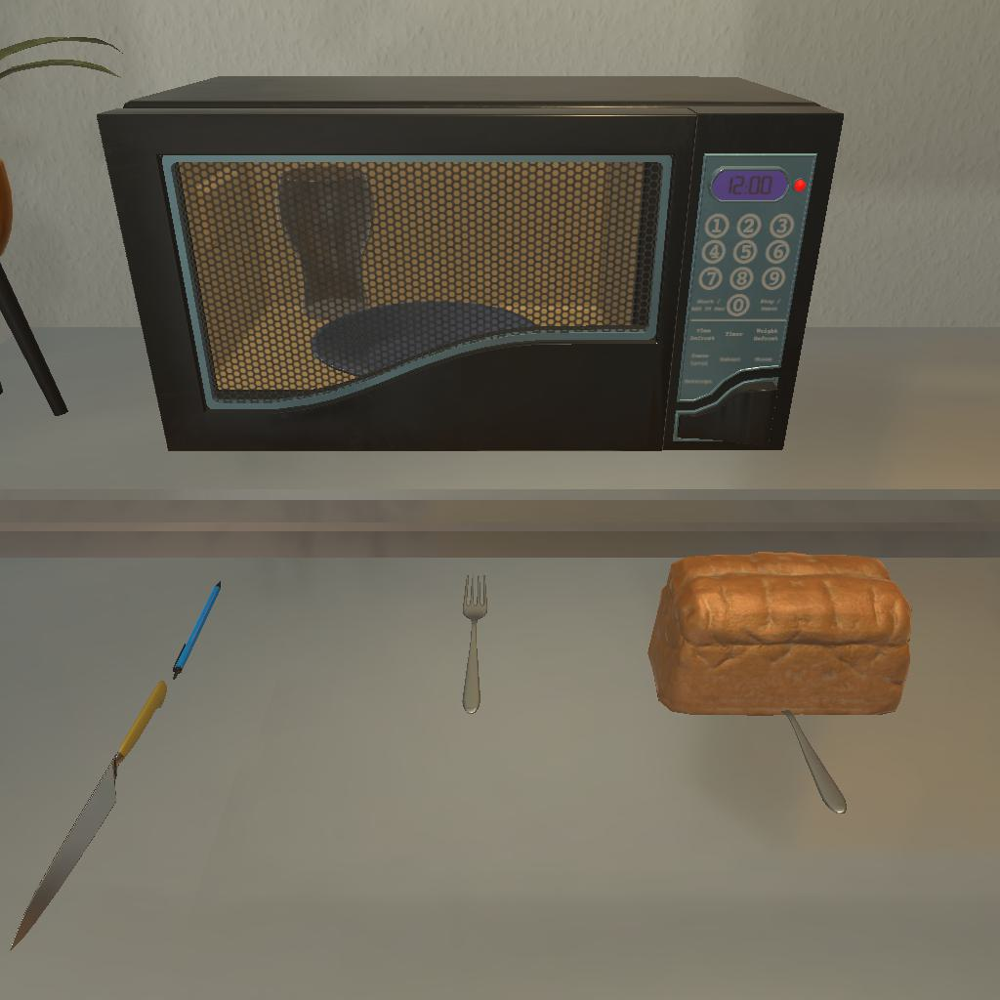

---------------------------------------------------------task: 22---------------------------------------------------------
--------------------------------------------------------------------------------------------------------------------------------------------------------------------
--------------------------------------------------------------------------------------------------------------------------------------------------------------------
Step:--------------------------------------------------------------------------3-------------------------------------------------------------------------------
----------------------------------------
VLM Prompt:
Image1:
Image2:
Image3:
**Instruction**
1. Analyze the provided images to identify all visible household objects and compare the difference between images (e.h. whether the object is opened or not and taken on hand or not), focusing on those relevant to the task description "put a hot egg in countertop."
2. Use the analysis of images and the task hint "The agent must find an object of the desired type, pick it up, go to a microwave, heat the object with the microwave, then find the correct location to place it, and put it down there. The agent does not need to use the microwave button or open the microwave to heat the object, and the agent just needs to do action that is "heat the object with the microwave"." to answer the question: what is the most reasonable action in the choices for the task description "put a hot egg in countertop"?
3. Decide and write the answer using the template: The answer is: (i): , where i is the real number. If there is no desired object in images, search every place based on **Initial Observation** to find the object. And if no one is exactly correct, choose a similar answer.
**Initial Observation**
You are in the middle of a room. Looking quickly around you, you can see cabinet (1-18), countertop (1-4), sink (1), drawer (1-7), sinkbasin (1), coffeemachine (1), microwave (1), garbagecan (1), stoveburner (1-4), toaster (1), fridge (1)
**Answer Choices**
(1): go to cabinet 1
(2): go to cabinet 2
(3): go to countertop 1
(4): go to cabinet 3
(5): go to cabinet 4
(6): go to cabinet 5
(7): go to sink 1
(8): go to cabinet 6
(9): go to drawer 1
(10): go to drawer 2
(11): go to sinkbasin 1
(12): go to cabinet 7
(13): go to cabinet 8
(14): go to coffeemachine 1
(15): go to cabinet 9
(16): go to countertop 2
(17): go to cabinet 10
(18): go to drawer 3
(19): go to drawer 4
(20): go to garbagecan 1
(21): go to drawer 5
(22): go to cabinet 11
(23): go to cabinet 12
(24): go to cabinet 13
(25): go to cabinet 14
(26): go to stoveburner 1
(27): go to countertop 3
(28): go to stoveburner 2
(29): go to stoveburner 3
(30): go to stoveburner 4
(31): go to drawer 6
(32): go to cabinet 15
(33): go to cabinet 16
(34): go to cabinet 17
(35): go to cabinet 18
(36): go to toaster 1
(37): go to drawer 7
(38): go to countertop 4
(39): open fridge 1
(40): close fridge 1
(41): examine fridge 1
**Answer**
Let's think step by step by following the instructions.
----------------------------------------
----------------------------------------
Original Response:
Image Analysis:
- Image 1 shows a sink with a drying rack area, a glass, and two objects that look like an egg and a spoon in the drying rack area. There is also a pot lid on the left side of the sink.
- Image 2 shows a countertop with a microwave, a knife, a fork, and a loaf of bread. The time on the microwave is set to 2:00.
- Image 3 shows what seems to be the fridge doors, which are closed.
Task Analysis:
For the task "put a hot egg in countertop," the agent needs to follow these steps:
1. Find an egg.
2. Pick up the egg.
3. Go to the microwave.
4. Heat the egg using the microwave.
5. Find the correct location on the countertop to place the egg.
6. Put the hot egg on the countertop.
Based on the images provided, we can see an egg in Image 1 at the drying rack area of the sink. Since the task does not require the agent to use the microwave button or open the microwave, we can assume that the agent can "heat the object with the microwave" by being in proximity to the microwave. Therefore, the agent needs to pick up the egg and place it on a countertop near the microwave for it to be heated.
From the initial observation, there are four countertops. Image 2 shows the microwave on a countertop, so we can infer that this is one of the countertops mentioned. Since the egg needs to be heated and then placed on the countertop, it is reasonable to assume that the egg should be placed on the same countertop as the microwave for convenience.
The answer is: (16): go to countertop 2
----------------------------------------
----------------------------------------
>>> Refine Original VLM Response and Get Pure Action: go to countertop 2
----------------------------------------
-----------------------------------------------------------------
Running time: 12.550833702087402 seconds
Total Money: 13.609079999999995
-----------------------------------------------------------------
-----------------------------------------------------------------
Text Observation:You arrive at loc 16. On the countertop 2, you see a bowl 1, a ladle 1, and a ladle 2.
-----------------------------------------------------------------
UNSUCCEED